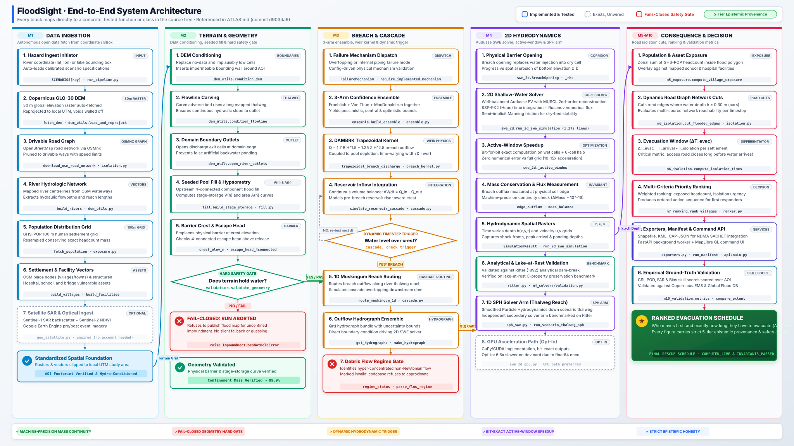
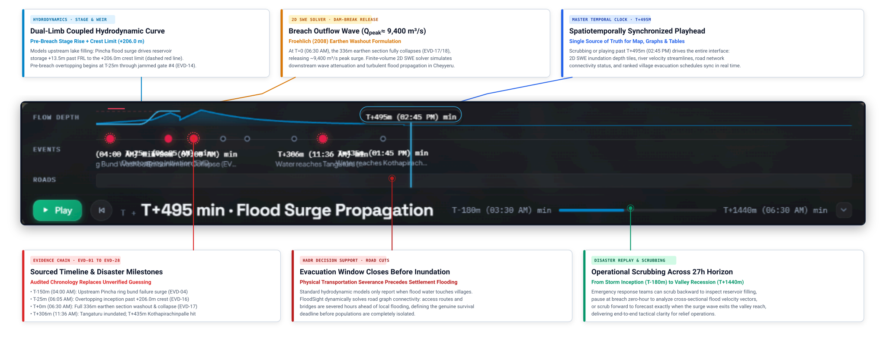
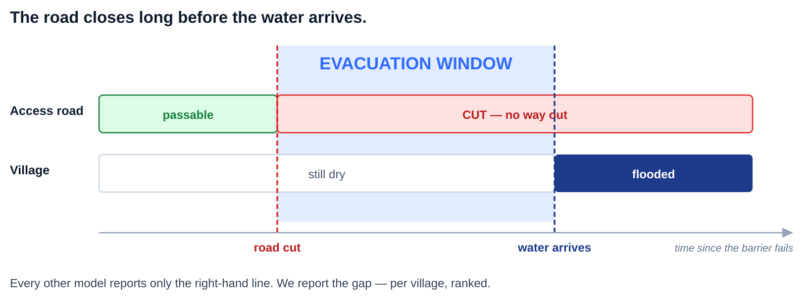
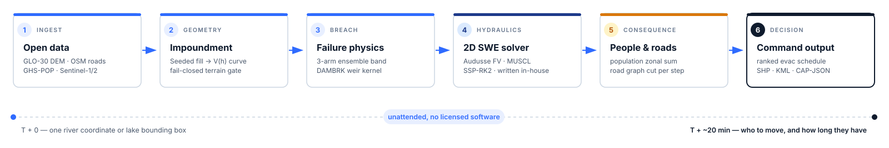
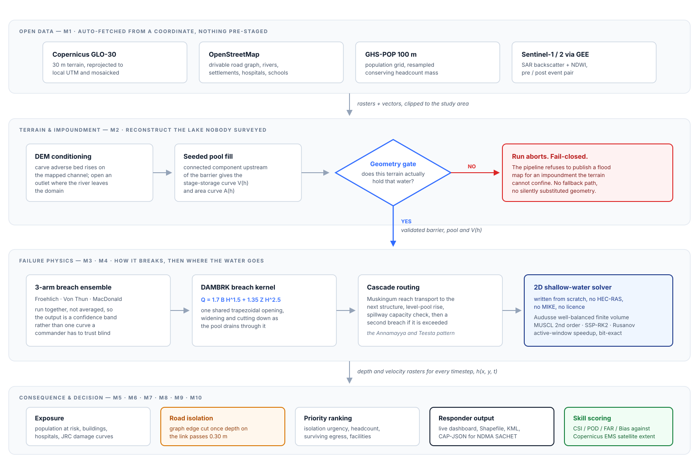
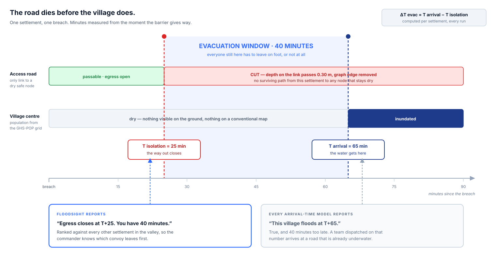
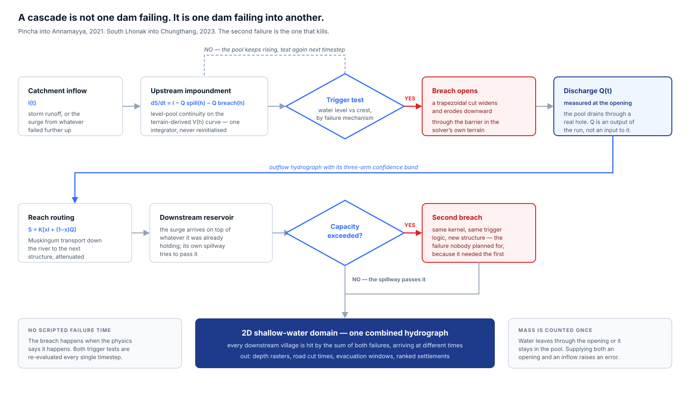

Four vector diagrams for the submission deck, drawn to carry the mechanism rather than decorate the slide. Each one is a standalone SVG on a transparent background, sized for a 16:9 slide.
4 figuresSVG · vectortransparent grounddeck due 30 Sep
Getting these into PowerPoint: Insert → Pictures → This Device, pick the .svg. It stays vector, so it scales to any slide size without going fuzzy.
To recolour a diagram for a dark slide: right-click → Convert to Shape, then each box, line and label becomes an editable PowerPoint object.
Files live in D:\sih_work\deck\.
Fig. 07
System architecture
07_system_architecture.svg
For the Technical Approach slide · every box is a real symbol

Five progressive stages across a widescreen 16:9 canvas, flowing left to right with zero retrograde snaking lines. Short high-contrast labels carry the slide; the monospace line under each box is the actual symbol in the codebase (ATLAS.md, commit d903da9). Two decision gates perform active safety enforcement: the geometry gate refuses to publish a flood map for unconfined impoundments (fails closed with ImpoundmentDoesNotHoldError), and the dynamic trigger test loops every timestep rather than firing at a scripted minute. The pipeline culminates in the ranked evacuation schedule with 5-tier epistemic provenance.
Two boxes are dashed on purpose. gee_satellite — module and tests exist, nothing calls it, no credentialed account. swe_2d_gpu — complete and checksum-identical, but measured 6.6× slower than the CPU path on the development card because the scheme needs float64. Drawing either as live would be the exact false claim you asked me to avoid. Delft3D-FLOW is named in the problem statement and has never been run here — it is absent from this diagram because there is no code, input or output for it in the repository. The second solver arm is our own well-balanced 2D finite-volume SWE solver: the same governing equations and the same numerical class, validated on the same Ritter benchmark. A “Delft3D-FLOW Ritter RMSE 0.14 m, precomputed” card used to sit in the Solvers tab and was removed rather than relabelled, because nothing in this project produced that number.
Fig. 06
The timeline spine, labelled
06_spine_annotated.svg
Real UI · Annamayya Dam Breach (2021) 27h Disaster Replay · Precision Vector HUD

The actual product timeline capture annotated with crisp, high-contrast forensic callouts carrying the audited telemetry from the 2021 Annamayya dam failure — upstream Pincha ring bund washout at T−150m (04:00 AM), reservoir stage rise to the +206.0m crest limit, full 336m earthen breach at T=0 (06:30 AM, Qpeak ≈ 9,400 m³/s), downstream arrival milestones at Tangaturu (T+306m) and Kothapirachinpalle (T+435m), and the road cut isolation timeline where lifeline corridors are severed hours ahead of local flooding. The real UI screenshot is directly embedded and annotated with clean leader lines, disentangling overlapping labels and making every phase crystal clear for slide presentations.
Presentation Note: In raw browser captures, event labels crowded near the breach hour overlap. This annotated figure anchors leader lines directly to each milestone on the real UI capture (EVD-01 through EVD-28), clearly explaining the two-phase physics (lake stage rise + breach hydrograph), transportation severance, and the master playhead at T+495m.
Fig. 05
Slide 2 flow — fits the empty block
05_slide2_flow.svg
Sized for the gap under the solution box · 1.8:1

Drawn to sit in the white space on the idea-submission slide. The top row restates the five solution bullets as a flow; the panel below is the payoff, and its three cards answer the exact three questions the Problem box asks on the left — which road, which village, how long. That pairing is what makes the slide argue instead of list. No minute values are printed, so nothing on it can be challenged as an unmeasured number.
Fig. 01
Pipeline strip
01_pipeline_strip.svg
For slide 1, the band across the top

The six stages a run passes through, with the real source or method named under each one so it does not read as six empty nouns. The rail underneath is the claim that matters to a judge: one coordinate in, a ranked evacuation schedule out, roughly twenty minutes, nothing licensed.
Fig. 02
End-to-end architecture
02_architecture.svg
For the technical approach slide

Four bands, with the data that moves between them written on the arrows. The element worth talking to is the geometry gate: it is drawn as a real branch with a real dead end, because a run that cannot show the terrain holds the water is refused rather than quietly downgraded. Most reviewers have seen a pipeline diagram before; few have seen one that draws its own abort path.
Fig. 03
Evacuation window
03_evacuation_window.svg
For the differentiator slide — the one to spend time on

Two tracks on one clock. The road closes at T+25; the water arrives at T+65; the gap between them is the only number a commander can act on. The right-hand box is what every arrival-time model reports, so the difference is on the slide rather than asserted in a bullet. This is the figure that answers "why not just use an existing inundation map".
The 25 / 65 / 1,240 figures are illustrative of the mechanism, not a measured run. Before this goes in front of a jury, swap them for numbers from an actual scenario output, or leave the axis labelled and drop the specific minute values.
Fig. 04
Cascade lifecycle
04_cascade_lifecycle.svg
For the physics slide, or the Annamayya / Teesta case study

The loop back from the trigger test is the point of the drawing: the breach is not scheduled, it is tested for at every timestep and happens when the level says so. The same test then runs again at the downstream structure, which is what makes Pincha into Annamayya a cascade rather than two separate floods. The two notes along the bottom are the honest-engineering claims — no scripted failure time, and mass counted exactly once.